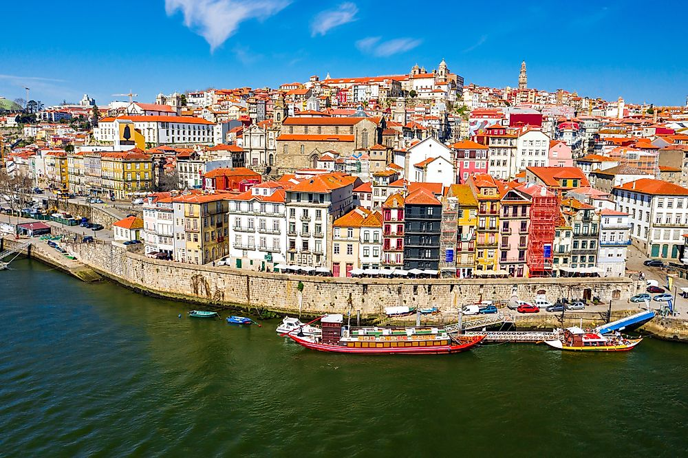
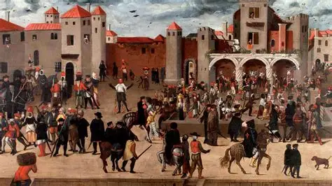

| Index |
History |
Landmarks |
Culture |
Gastronomy |
Sports |
History |
| Portugal is a beautiful and cuktural diverse place where tourist have fun and learn great things. Here we are going to introduce you some of the history of Portugal. |
|  |
| Portugal became an independent kingdom in 1143, after breaking away from the Kingdom of León. During the 15th and 16th centuries, Portugal was a major global power thanks to the Age of Discoveries, exploring Africa, Asia, and South America. Explorers like Vasco da Gama helped establish a vast overseas empire, including Brazil, which became Portugal’s most important colony. |
|  |
| In 1580, Portugal lost its independence and was ruled by Spain for 60 years, but it regained sovereignty in 1640. Over time, the empire declined, especially after Brazil became independent in 1822. In the 20th century, Portugal lived under a long dictatorship until the peaceful Carnation Revolution of 1974, which restored democracy and ended colonial wars. Today, Portugal is a democratic republic and a member of the European Union. |